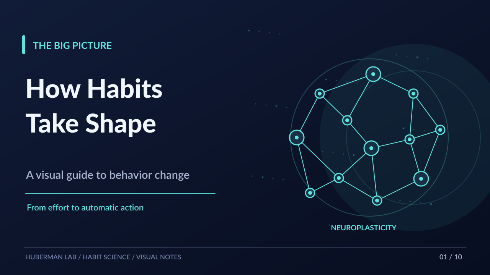

How Habits Take Shape
An animated English visual guide, adapted from Huberman Lab Essentials notes.

01 / 10
Use ← / → to switch slides; Space to pause. The 21-day framework is an experiment, not a universal habit-formation deadline. The 40-second English-text MP4 with music is delivered in ChatGPT; this SVG player works offline.
Source: The Science of Making & Breaking Habits — Huberman Lab Essentials | Notes & script